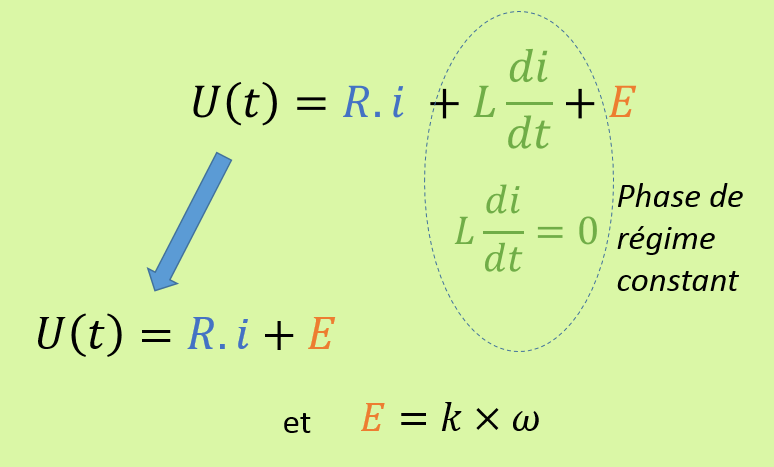
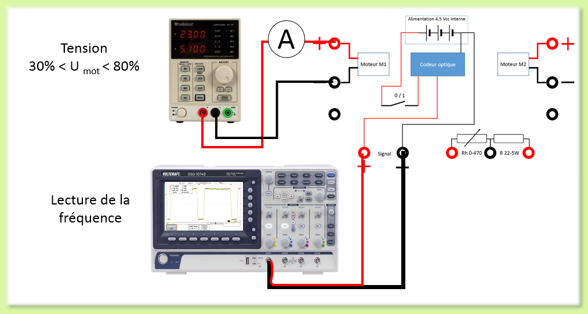
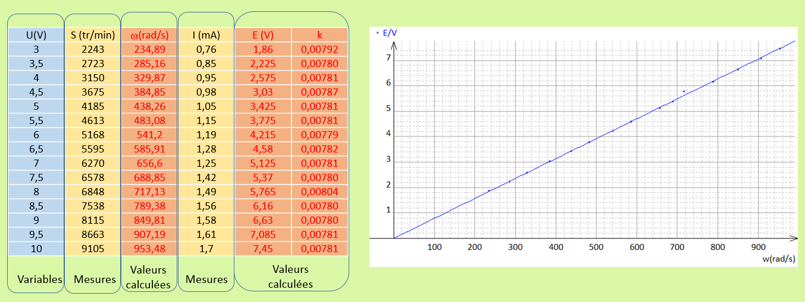
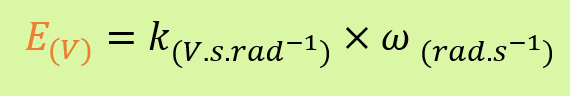

TP3-Activité 3 : Evaluer la constante d'un MCC
Objectif : Avec le banc moteur qui vous a été confié, mettre en place une chaine de mesure pour évaluer la constante d'un MCC.
Principe utilisé
Nos connaissons la valeur de la résistance interne, nous mesurons la vitesse de rotation du moteur ainsi que le courant consommé. Nous nous plaçons dans la phase de régime constant. Nous pouvons écrire :

Procédure

Etape 1 :
- Faire évoluer la tension par pas de 0,5 Volt;
- Mettre en place un ampèremètre dans la chaine de mesure
- Relever la fréquence et le courant consommé;
- Relever le courant;
- Renouveler le mesure jusqu'à 80% de la tension d'alimentation du moteur.
Etape 2 :
- Saisir les valeurs mesurées ;
- Mettre en évidence la valeur de la constante k avec une courbe.
L'utilisation d'un tableur type EXCEL ou une application comme REGRESSI est conseillée.

Conclusion
La valeur ainsi déterminée doit nous permettre de déterminer le coefficient k qui lie la fréquence de rotation à la FEM E.

Retour en haut de la page
RETOUR à la page TP 3 Caractériser un actionneur